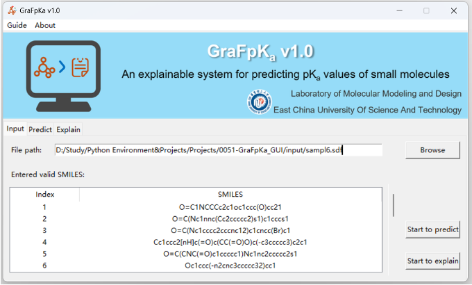
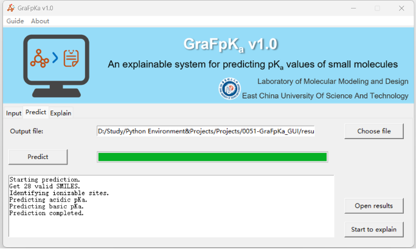
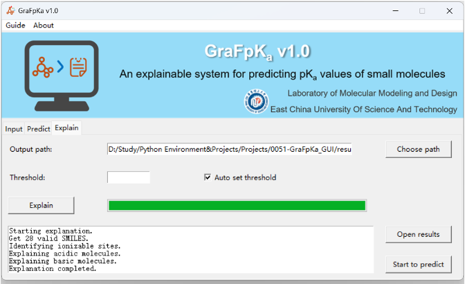

返回成果与获奖
支持从 SDF 文件批量导入分子，自动解析并校验 SMILES，列表展示索引与结构信息；可分别启动预测或可解释性分析流程。
实时显示预测进度条与运行日志，自动识别可电离位点并完成酸性、碱性 pKa 预测，预测完成后可直接打开结果文件。
基于积分梯度方法生成原子级贡献归因，支持阈值手动调节或自动设置，解释进度与日志实时输出，结果可导出查看。
OUTPUT · SOFTWARE COPYRIGHT
小分子 pKa 预测及可解释性分析软件（GraFpKa）V1.0
软件简介
GraFpKa 是基于本项目研究成果开发的小分子 pKa 预测软件， 提供酸碱性 pKa 预测与基于积分梯度的原子级可解释性分析功能。
软件界面
输入界面 · INPUT

预测界面 · PREDICT

可解释性分析界面 · EXPLAIN
